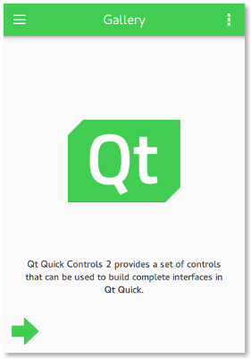
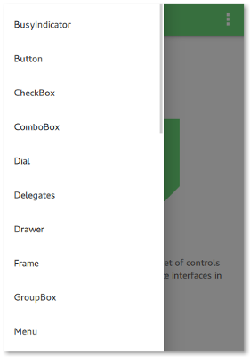
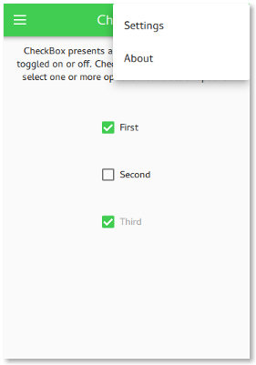

Qt Quick Controls - Gallery
A gallery of controls.
|
 Welcome Screen |
 Side Drawer |
 Options Menu |
The gallery example is a simple application with a drawer menu that contains all the Qt Quick Controls. Each menu item opens a page that shows the graphical appearance of a control, allows you to interact with the control, and explains in which circumstances it is handy to use this control.
When the application is in portrait mode, the drawer is an interactive side panel that can be swiped open from the left edge. It appears on top of the content, blocking user interaction through its modal background. When the application is in landscape mode, the drawer and the content are laid out side-by-side.
The current orientation of the application is determined by comparing the width and height of the window and orientation mode configuration in the settings:
readonly property bool portraitMode: !orientationCheckBox.checked || window.width < window.height
As this example supports all built-in Qt Quick Controls styles, it uses runtime style selection.
Running the Example
To run the example from Qt Creator, open the Welcome mode and select the example from Examples. For more information, visit Building and Running an Example.